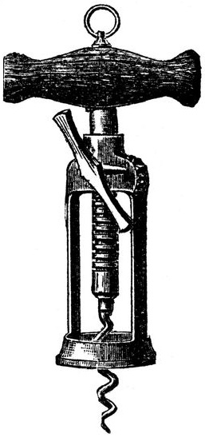

ALCOOL
"L'alcool tue lentement. On s'en fout. On n'est pas pressés." Georges Courteline
Alcoolisme, alcoolodépendance, éthylisme, dipsomanie, méthilepsie, méthomanie, binge drinking, les modalités de consommations sont pléthores. Les motivations sont également plurielles, elles dépendent à la fois de l'individu (caractéristiques individuelles, personnalité ou disposition génétique), de la substance consommée (accessibilité, prix, effet produit) et du contexte de boisson (pression des pairs, valeurs véhiculées par la société, de la situation de vie).
Aucune consommation n'est anodine. Dans les motifs d'usage amplifiant des états émotionnels neutres ou positifs, on distingue les motifs de renforcement (je bois de l’alcool parce que j’aime les sensations que cela me procure, ou parce que cela m’amuse) et les motifs sociaux (parce que c’est plus drôle lorsque je suis avec les autres, ou pour faire la fête). Les motifs à valeur négative correspondent à des objectifs associés aux peurs individuelles. Il peut s’agir d’une part de motifs tournés autour de stratégies d'adaptation face à des difficultés internes. La personne boit afin de minorer ses sentiments et émotions négatives (je bois parce que cela m’aide lorsque je suis nerveux ou déprimé, ou pour oublier mes problèmes, mes peurs, le sentiment d’anxiété ou de tristesse). Elle boit ainsi pour faire face à une situation perçue comme stressante. Il peut s’agir aussi de motifs de conformité. Ils sont en lien avec le contexte extérieur et visent à éviter des sentiments de rejet (je bois pour ne pas subir les railleries des buveurs, pour ne pas me sentir exclu, ou parce que j’ai peur de ne pas être apprécié par les autres). C'est l'alcoolisme mondain, aussi appelé alcoolisme ménager ou convivial, se caractérisant par une alcoolisation faible mais quotidienne, n'entraînant pas de sentiment de dépendance mais étant l'accès direct vers la pathologie chronique.
Quelque soit les motifs de consommations, il peut s'instaurer une dépendance. La dépendance à l'alcool n'implique pas que la consomation d'alcool soit quotidienne, ni qu'elle dépasse une certaine quantité : elle signifie qu'il est devenu impossible de maîtriser la consommation du produit. De fait, il n'est pas rare que des personnes ayant une véritable dépendance à l'alcool déclarent ne boire que de façon intermittente.
Quand une personne a perdu la maîtrise de sa consommation, elle présente, habituellement de façon simultanée, au moins 3 des symptômes suivants :
Aucune consommation n'est anodine. Dans les motifs d'usage amplifiant des états émotionnels neutres ou positifs, on distingue les motifs de renforcement (je bois de l’alcool parce que j’aime les sensations que cela me procure, ou parce que cela m’amuse) et les motifs sociaux (parce que c’est plus drôle lorsque je suis avec les autres, ou pour faire la fête). Les motifs à valeur négative correspondent à des objectifs associés aux peurs individuelles. Il peut s’agir d’une part de motifs tournés autour de stratégies d'adaptation face à des difficultés internes. La personne boit afin de minorer ses sentiments et émotions négatives (je bois parce que cela m’aide lorsque je suis nerveux ou déprimé, ou pour oublier mes problèmes, mes peurs, le sentiment d’anxiété ou de tristesse). Elle boit ainsi pour faire face à une situation perçue comme stressante. Il peut s’agir aussi de motifs de conformité. Ils sont en lien avec le contexte extérieur et visent à éviter des sentiments de rejet (je bois pour ne pas subir les railleries des buveurs, pour ne pas me sentir exclu, ou parce que j’ai peur de ne pas être apprécié par les autres). C'est l'alcoolisme mondain, aussi appelé alcoolisme ménager ou convivial, se caractérisant par une alcoolisation faible mais quotidienne, n'entraînant pas de sentiment de dépendance mais étant l'accès direct vers la pathologie chronique.
Quelque soit les motifs de consommations, il peut s'instaurer une dépendance. La dépendance à l'alcool n'implique pas que la consomation d'alcool soit quotidienne, ni qu'elle dépasse une certaine quantité : elle signifie qu'il est devenu impossible de maîtriser la consommation du produit. De fait, il n'est pas rare que des personnes ayant une véritable dépendance à l'alcool déclarent ne boire que de façon intermittente.
Quand une personne a perdu la maîtrise de sa consommation, elle présente, habituellement de façon simultanée, au moins 3 des symptômes suivants :
- un désir de boire de l'alcool difficile voire impossible à surmonter (craving)
- des difficultés à contrôler le début de la consommation d'alcool, ainsi que la quantité consommée
- des symptômes génants lors de l'arrêt ou de la diminution de la consommation (syndrome de sevrage)
- un besoin de consommer des quantités d'alcool de plus en plus importantes
- une obsession vis-à-vis de l'alcool au point d'abandonner d'autres sources d'intérets ou de plaisir
- une poursuite de la consommation malgré des conséquences problématiques dût à l'usage

La consommation excessive d'alcool et l'installation d'une dépendance est, dans la plupart des cas, facilitée par des facteurs psychologiques favorisants qui déclenchent et entretiennent le comportement de consommation. Les exemples cliniques les plus fréquemment rencontrés sont les individus en déficits dans leurs capacités à gérer le stress et l'anxiété, un état dépressif, des difficultés dans les habiletés de communication ou une intolérance à la frustration plus ou moins marquée. Dans une moindre mesure, il existe également un trouble de la personnalité, des troubles de perception et d'expression émotionnelle.
Par l'effet anxiolytique recherché, l’alcool a un impact "positif" immédiat sur les tensions et stress internes subis : ceux-ci diminuent. Cet effet est cependant éphémère, factice, pervers et n'engendre qu'une surdité, une absence d'acuité sur la réalité de l'usager. Ce dernier se retrouvera de nouveau face aux mêmes difficultés sans avoir pu développer de stratégies adéquates pour les résoudre, voire se fragilise davantage face à elles.
L'alcool, dans son usage pathologique, est une véritable toxicomanie qui engendre une tolérance, une accoutumance sévère et des effets psychologiques, neurologiques et somatiques potentiellement irréversibles. Bien que conscient des méfaits de l'alcool, il arrive que l'usager, à l'idée d'un changement même s'il est bénéfique, reste ambivalent, percevant l'intéret du changement mais a du mal à renoncer à certains avantages liés au fait de ne pas changer. L'hypnose ouvre ici les perspectives motivationnelles du changement.
Tabagisme et alcool :
Il y a une forte corrélation entre dépendance à l'alcool et dépendance au tabagisme. Boire donne envie de fumer : la stimulation cérébrale de l'alcool est plus faible que celle liée à l'absorption de nicotine et une stimulation faible induit une envie de toujours plus fumer. L'éthanol, substance psychotrope de l'alcool ralentit l'activité cérébrale qui, par effet réflexe, cherche à se stimuler par le biais de la nicotine qui est une substance neuro excitatrice. Vous percevez ici le cercle vicieux et l'auto alimentation d'une polydépendance.
Par l'effet anxiolytique recherché, l’alcool a un impact "positif" immédiat sur les tensions et stress internes subis : ceux-ci diminuent. Cet effet est cependant éphémère, factice, pervers et n'engendre qu'une surdité, une absence d'acuité sur la réalité de l'usager. Ce dernier se retrouvera de nouveau face aux mêmes difficultés sans avoir pu développer de stratégies adéquates pour les résoudre, voire se fragilise davantage face à elles.
L'alcool, dans son usage pathologique, est une véritable toxicomanie qui engendre une tolérance, une accoutumance sévère et des effets psychologiques, neurologiques et somatiques potentiellement irréversibles. Bien que conscient des méfaits de l'alcool, il arrive que l'usager, à l'idée d'un changement même s'il est bénéfique, reste ambivalent, percevant l'intéret du changement mais a du mal à renoncer à certains avantages liés au fait de ne pas changer. L'hypnose ouvre ici les perspectives motivationnelles du changement.
Tabagisme et alcool :
Il y a une forte corrélation entre dépendance à l'alcool et dépendance au tabagisme. Boire donne envie de fumer : la stimulation cérébrale de l'alcool est plus faible que celle liée à l'absorption de nicotine et une stimulation faible induit une envie de toujours plus fumer. L'éthanol, substance psychotrope de l'alcool ralentit l'activité cérébrale qui, par effet réflexe, cherche à se stimuler par le biais de la nicotine qui est une substance neuro excitatrice. Vous percevez ici le cercle vicieux et l'auto alimentation d'une polydépendance.
EN RELATION

FRUSTRATION
DEFENSE
TOXIC Ô MANIE
PERSONNALITE
DEPENDANCE
EMOTION